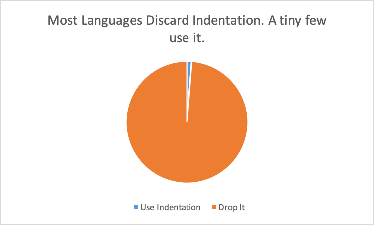
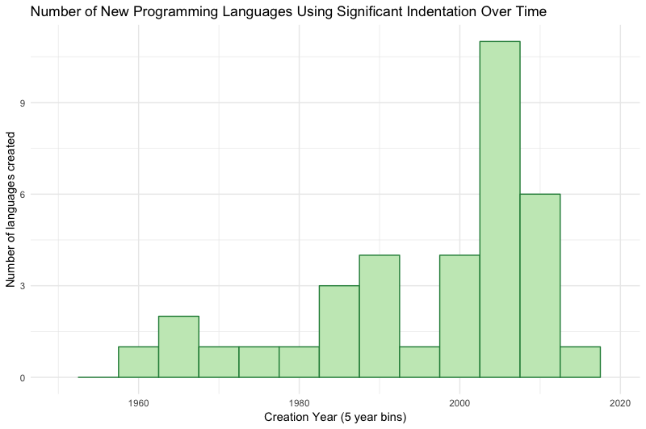

by Breck Yunits
January 24, 2019 — Python, as one of the top 10 programming languages in the world, is the most popular programming language that treats indentation as significant. In these offside languages, programmers indent their code blocks instead of using braces, brackets, or other visible characters.
I was curious about how common these languages were so I did some brief analysis to answer these questions:

These languages use indentation:
abc, aldor, boo, buddyscript, cobra, coffeescript, csl, curry, elixir, f-sharp, genie, haml, haskell, inform, iswim, literate-coffeescript, livescript, madcap, madcap-vi, makefile, markdown, miranda, nemerle, net-format, nim, occam, org, promal, python, restructuredtext, sass, scss, spin, stylus, xl-programming-language and yaml.
According to my present database, languages that strip indentation are about 70x more common than languages that employ it.
My methods and models are not yet perfect and may have missed some indentation languages. If my models missed ~80% of the languages, that would still be a 10x difference between the two classes of languages. If you know of a missing language send a pull request or let me know on Twitter.

While there have been some notable new languages using significant indentation in the 2000's, some of the biggest new languages don't, including Go, Swift, Rust, TypeScript, Julia and Kotlin.
Takeaway: According to my current data, there has not been a significant increase in new languages using significant indentation.
I would like to expand upon this to help language designers answer the question: will adding significant indentation increase the odds of my language becoming successful? I will continue to invest in my data collection and mining efforts to ensure I am not missing accurate information about the lesser documented languages.
UPDATE: masonic on HackerNews pointed out that COBOL should be included on this list. The column position of tokens is indeed significant in COBOL (and FORTRAN too), so perhaps in the next update I'll clarify this categorization to adhere more closely to the offside rule, or will include a broader definition of significant indentation that includes some of these additional languages